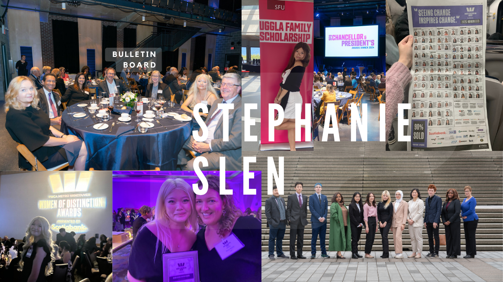
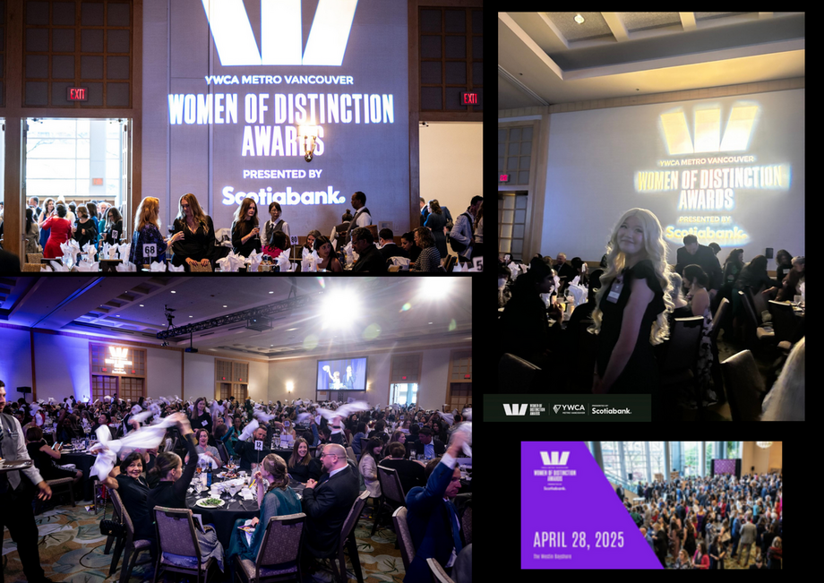

At just 21, Stephanie Slen drives bold initiatives in education, equity, and community power—turning grassroots activism into $1.9M+ in scholarships for youth.


Endorsements
"Stephanie is the epicenter of our school. Every good thing that occurs is either touched, produced, guided, sponsored, or completed by Stephanie. This is not an exaggeration. She is front and centre every single day. She is hard-wired to do this. She is not doing this to pad an already ridiculous resume. She operates selflessly, with a relentless desire to make this world better.
Trevor Stokes Marathon Coach & Department Head – Alternative Programs, Britannia Secondary
"Stephanie’s tenacity, humility, commitment to justice and to her own personal learning and development is truly inspirational. Her impact on the lives of so many Fresh Roots youth participants cannot be understated. Knowing Stephanie gives me hope for the future. I cannot imagine a more deserving recipient for the Young Woman of Distinction Award.
Alexa Pitoulis, Executive Director BC Family Doctors & Former Executive Director of Fresh Roots Urban Farm
"The staff, board, and entire community of Britannia Community Services Centre Society (BCSCS) proudly endorse Stephanie Slen. BCSCS operates a 17-acre municipal community hub in East Vancouver, encompassing schools, a public library, an ice arena, an Indigenous Carving Pavilion, a teen centre, a seniors centre, daycares, and a swimming pool, serving thousands of residents each year.
Stephanie has been a remarkable leader from a young age, serving on the Britannia Board of Management at just 18 — one of only 12 elected members — where she contributed to youth programming, governance, and community-building initiatives with exceptional vision, maturity, and dedication. Her leadership has strengthened our community and amplified youth voices, and we are honoured to stand behind her as she continues to make a lasting impact for years to come."
Cynthia Low, Executive Director Britannia Community Centre


Preview
At 19, Stephanie earned nine scholarships worth $280,000 and turned that success into a mission to help other students achieve the same. What began as her sharing advice with a few peers has since grown into supporting students in securing full-ride scholarships totaling $2,401,950. Her work has been featured on Global News, CBC News, and in the Vancouver Sun (April 7 issue), and she was nominated as a Metro Vancouver Young Woman of Distinction for her impact.
Stephanie has always loved storytelling. She published seven stories in the Writers’ Exchange storybooks and spent five years there as a teen leader, teaching thousands of children to read. That passion grew into writing articles about students who’ve overcome challenges and earned scholarships, with her work featured in The People’s Voice Article.
At 19, Stephanie earned nine scholarships worth $280,000 and turned that success into a mission to help other students achieve the same. What began as her sharing advice with a few peers has since grown into supporting students in securing full-ride scholarships totaling $2,401,950. Her work has been featured on Global News, CBC News, and in the Vancouver Sun (April 7 issue), and she was nominated as a Metro Vancouver Young Woman of Distinction for her impact.
Stephanie has always loved storytelling. She published seven stories in the Writers’ Exchange storybooks and spent five years there as a teen leader, teaching thousands of children to read. That passion grew into writing articles about students who’ve overcome challenges and earned scholarships, with her work featured in The People’s Voice Article.

Marathon Runner
At 14, after a life-changing event, Stephanie began running—and she hasn’t stopped since. Over the last six years, she has completed fourteen half marathons and two full marathons across the West Coast, including Vancouver, Seattle, Victoria, and Whistler. Less than 1% of people in the world run a marathon each year, and the average marathoner is in their late thirties or early forties. Stephanie defied those odds before even turning twenty.
Her passion for running extends beyond personal achievement. In 2022, as Student Council President, she organized a school-wide Terry Fox Run to raise funds for cancer research. Each year, she also participates in the SHLF Run, supporting children in need at the Streetfront Program— a community close to her heart.
Stephanie trains under the guidance of Mr. Stokes, a renowned marathon coach who has completed over 150 marathons and has helped countless youth from Vancouver’s Downtown Eastside discover the power of perseverance through running. As Mr. Stokes once shared in Impact Magazine: “It’s about 55,000 strides to finish a marathon. That’s 55,000 opportunities to quit. Imagine how much affirmation you get when you don’t quit 55,000 times.”
At 14, after a life-changing event, Stephanie began running—and she hasn’t stopped since. Over the last six years, she has completed fourteen half marathons and two full marathons across the West Coast, including Vancouver, Seattle, Victoria, and Whistler. Less than 1% of people in the world run a marathon each year, and the average marathoner is in their late thirties or early forties. Stephanie defied those odds before even turning twenty.
Her passion for running extends beyond personal achievement. In 2022, as Student Council President, she organized a school-wide Terry Fox Run to raise funds for cancer research. Each year, she also participates in the SHLF Run, supporting children in need at the Streetfront Program— a community close to her heart.
Stephanie trains under the guidance of Mr. Stokes, a renowned marathon coach who has completed over 150 marathons and has helped countless youth from Vancouver’s Downtown Eastside discover the power of perseverance through running. As Mr. Stokes once shared in Impact Magazine: “It’s about 55,000 strides to finish a marathon. That’s 55,000 opportunities to quit. Imagine how much affirmation you get when you don’t quit 55,000 times.”


Uggla Family Full Ride Scholar
Stephanie Slen is one of ten recipients of the Simon Fraser University Uggla Family Scholarship, a highly prestigious, worldwide award connecting exceptional students from institutions such as the London School of Economics and beyond. This full-ride scholarship supports leaders pursuing academic excellence and community impact. Lance Uggla, Vice Chair of General Atlantic, co-founded BeyondNetZero, the firm’s first climate growth equity fund supporting innovative companies advancing net-zero solutions. Previously, he founded and led IHS Markit, taking it public in 2014 and orchestrating its $44 billion merger with S&P Global.
Stephanie Slen is one of ten recipients of the Simon Fraser University Uggla Family Scholarship, a highly prestigious, worldwide award connecting exceptional students from institutions such as the London School of Economics and beyond. This full-ride scholarship supports leaders pursuing academic excellence and community impact. Lance Uggla, Vice Chair of General Atlantic, co-founded BeyondNetZero, the firm’s first climate growth equity fund supporting innovative companies advancing net-zero solutions. Previously, he founded and led IHS Markit, taking it public in 2014 and orchestrating its $44 billion merger with S&P Global.

Canucks Trevor Linden Community Spirit Scholar
Stephanie Slen is a recipient of the Canucks Trevor Linden Community Spirit Scholarship, a distinguished award granted annually to four graduating students across British Columbia who have demonstrated exceptional leadership, community service, and resilience. Trevor Linden is one of the most accomplished figures in Canadian hockey history––a longtime Vancouver Canuck captain, leader of the NHL Players’ Association, Olympian, and recipient of numerous awards for on-ice performance and off-ice charity.

2025 YWCA Young Women of Distinction Award for All of Metro Vancouver, Nominee
Stephanie Slen is a nominee for the 2025 YWCA Young Women of Distinction Award, which recognizes exceptional young women aged 18–25 who demonstrate leadership, maturity, and compassion. The award honours those who have made a significant difference in Metro Vancouver through their commitment to a cause or the pursuit of a personal goal, showing perseverance, innovation, and a deep understanding of community issues.
CoFounder
At 16 after attending SHAD Canada at York University, a S.T.E.A.M. Entrepreneur Program on a full Scholarship, Stephanie Co-Founder in Vancouver British Columbia- Nurtured Youth Community with her Co-Founder Geertika Jeyaganesha in Toronto. Supporting kids across Canada with their mental health during covid 19. Six months after it was founded it won a $5,000 grant from OXY Canada as the Face of Today and featured in a CBC News Article.
At 16 after attending SHAD Canada at York University, a S.T.E.A.M. Entrepreneur Program on a full Scholarship, Stephanie Co-Founder in Vancouver British Columbia- Nurtured Youth Community with her Co-Founder Geertika Jeyaganesha in Toronto. Supporting kids across Canada with their mental health during covid 19. Six months after it was founded it won a $5,000 grant from OXY Canada as the Face of Today and featured in a CBC News Article.


Simon Fraser University President and Vice Chancellors Award Dinner 2024
Blog Preview:
"I had the incredible honor of attending the 2024 Simon Fraser University President and Vice-Chancellor’s Award Dinner as an SFU Uggla Family Scholar. A huge thank you to Joy Johnson, SFU’s 10th President and Vice-Chancellor, and Erin Morantz, Vice-President of Advancement & Alumni Engagement, for their unwavering support of Uggla Scholars.
It was inspiring to meet so many brilliant and dedicated SFU staff, including Kris Magnusson, Senior Advisor to the Provost & VP Academic, who shared invaluable advice about university and politics, and Karina Chow, Director for Advancement in the Faculty of Applied Sciences, with whom I had a wonderful discussion on fundraising, community, and giving back.
Other highlights included hearing stories from Eugene Fiume, Dean of Applied Sciences, and connecting with Amyn & Shien Rajan, recipients of the 2023 President’s Distinguished Community Leadership Awards. The night was a powerful reminder of how our educational journeys are supported by the dedication of community pillars who give so much to help others succeed.
I am beyond grateful for this experience and the opportunity to represent SFU as an Uggla Family Scholar."
"I had the incredible honor of attending the 2024 Simon Fraser University President and Vice-Chancellor’s Award Dinner as an SFU Uggla Family Scholar. A huge thank you to Joy Johnson, SFU’s 10th President and Vice-Chancellor, and Erin Morantz, Vice-President of Advancement & Alumni Engagement, for their unwavering support of Uggla Scholars.
It was inspiring to meet so many brilliant and dedicated SFU staff, including Kris Magnusson, Senior Advisor to the Provost & VP Academic, who shared invaluable advice about university and politics, and Karina Chow, Director for Advancement in the Faculty of Applied Sciences, with whom I had a wonderful discussion on fundraising, community, and giving back.
Other highlights included hearing stories from Eugene Fiume, Dean of Applied Sciences, and connecting with Amyn & Shien Rajan, recipients of the 2023 President’s Distinguished Community Leadership Awards. The night was a powerful reminder of how our educational journeys are supported by the dedication of community pillars who give so much to help others succeed.
I am beyond grateful for this experience and the opportunity to represent SFU as an Uggla Family Scholar."

Scholarship Recipient
Stephanie Slen is the recipient of eleven scholarships, including being one of ten recipients of the 2023 Simon Fraser University Uggla Family Full-Ride Scholarship, the SHINE Beedie Luminaries Scholarship, one of four recipients of the Canucks Trevor Linden Community Spirit Scholarship, the Vancouver recipient of the BC Superintendents Scholarship, as well as the SASAH Scholarship, Skills for Hope Foundation Scholarship, Allan Ross Scholarship, Pathways to Education Scholarship, Britannia Class of ’77 Scholarship, 2023 Student Council Scholarship Award, and most recently awarded 2026 TELUS Student Bursary Award.
Stephanie Slen is the recipient of eleven scholarships, including being one of ten recipients of the 2023 Simon Fraser University Uggla Family Full-Ride Scholarship, the SHINE Beedie Luminaries Scholarship, one of four recipients of the Canucks Trevor Linden Community Spirit Scholarship, the Vancouver recipient of the BC Superintendents Scholarship, as well as the SASAH Scholarship, Skills for Hope Foundation Scholarship, Allan Ross Scholarship, Pathways to Education Scholarship, Britannia Class of ’77 Scholarship, 2023 Student Council Scholarship Award, and most recently awarded 2026 TELUS Student Bursary Award.

October 2025, Fundraising at the Canada Great Kitchen Gala
This year, at one of Canada’s most distinguished culinary galas — Canada’s Great Kitchen Party, celebrated in ten cities and recognized as North America’s premier gastronomic event — Stephanie Slen represented Fresh Roots Urban Farm Society, helping raise over $7,500 in support of youth empowerment and community food programs.
This year, at one of Canada’s most distinguished culinary galas — Canada’s Great Kitchen Party, celebrated in ten cities and recognized as North America’s premier gastronomic event — Stephanie Slen represented Fresh Roots Urban Farm Society, helping raise over $7,500 in support of youth empowerment and community food programs.
Endorsements
"Stephanie is a highly valued member of our community, her school community, and the neighborhood community. Throughout the years I witnessed her passion for sustainability, community, and working with young people expand beyond school and the Writers’ Exchange"
Annastasia Forst, Managing Director the Writers Exchange
Annastasia Forst, Managing Director the Writers Exchange